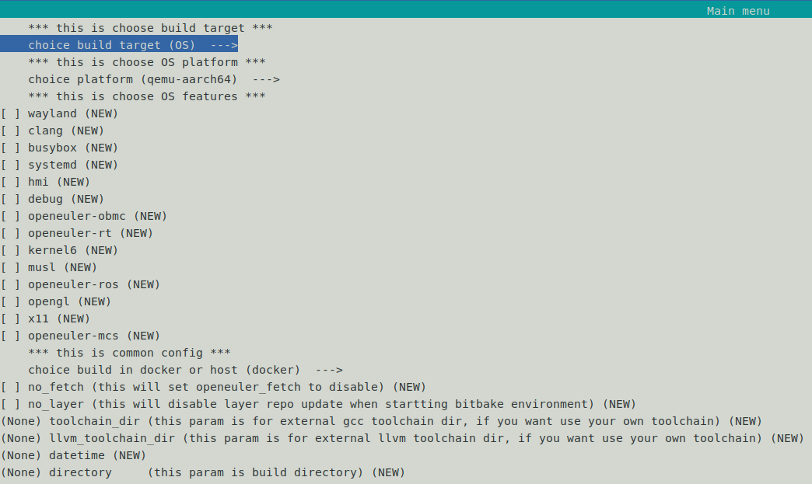

openEuler Embedded x86-64镜像构建¶
本章主要介绍openEuler Embedded中x86-64镜像的构建、安装及启动方法。
根据 oebuild快速构建 ，初始化oebuild工作目录；
oebuild init <directory> cd <directory> oebuild update进入oebuild工作目录，创建x86-64的编译配置文件：
oebuild generate -p x86-64 -d <build_x86>
除了使用上述命令进行配置文件生成，还可以使用如下命令进入到菜单选择界面进行对应数据填写和选择，效果跟上述命令相同。
oebuild generate具体界面如下图所示:
Note
x86-64的软实时镜像通过以下命令进行编译配置：oebuild generate -p x86-64 -f openeuler-rt -d <build_x86_rt>更多用法请参考oebuild章节。进入
<build_x86>目录，编译openeuler-image：# 构建镜像 oebuild bitbake openeuler-image # 构建SDK oebuild bitbake openeuler-image -c do_populate_sdk
构建完成后，在
<build_x86>/output目录下可以看到镜像，如：$ tree . └── 20230315093436 ├── bzImage -> bzImage-5.10.0 ├── bzImage-5.10.0 ├── openeuler-image-generic-x86-64-20230315093436.iso ├── openeuler-image-generic-x86-64-20230315093436.rootfs.cpio.gz └── vmlinux-5.10.0